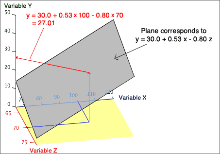

Graphical display of the equation
The linear equation to predict a response from a single explanatory variable can be displayed as a straight line on a scatterplot of Y against X.
y = b0 + b1 x
The corresponding equation for predicting Y from X and Z is
y = b0 + b1 x + b2 z
This linear model can be displayed as a plane on a 3-dimensional scatterplot of Y against X and Z.
